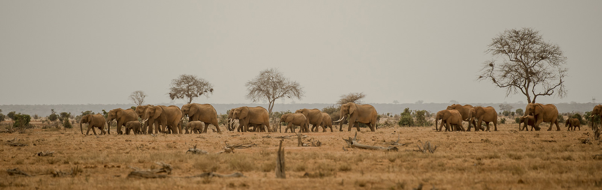

SATAO II, one of Africa's last giant tusker elephants, is now dead, killed by a poacher's poison arrow. Another of the last tuskers left in Africa has been also poached, leaving only 6 of these giants in the Tsavo Conservation Area in southern Kenya. This is a devastating blow to elephant conservation and to super tusker genes.
SATAO II's death, and the recent spike in poaching, represent a significant threat to the world's last-remaining tuskers and to Tsavo's precious elephant population. PLEASE consider supporting the Tsavo Trust in their brave battle to keep these elephants safe from the ruthless poaching syndicates.
Elephant populations in the area crashed due to poaching, check the below table
| 1970s | 1989 | 2014 |
|---|---|---|
| 45,000 | 6,000 | 11,000 |